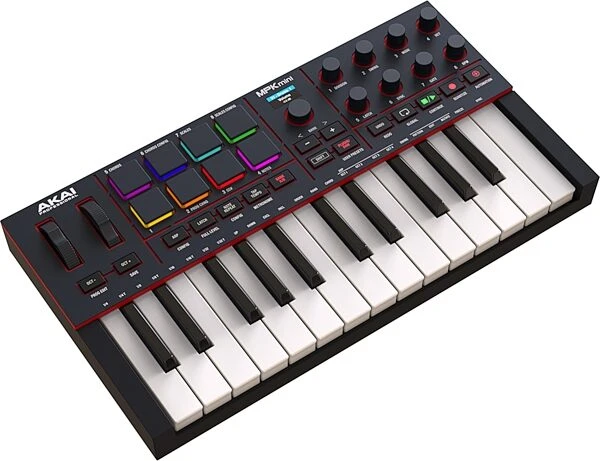

The SpaceMouse: moving in 3D with one hand
The SpaceMouse comes from robotics, not from computer graphics. In the late 1970s the German aerospace centre DLR began researching devices with six degrees of freedom (three movements and three rotations) to control robot grippers[1]. The first sensor used strain gauges inside a hollow plastic ball. In Europe the product was called SPACE MOUSE, in the USA it was sold as Magellan[1]. Today the name is used by 3Dconnexion[2].
Designers use it with one hand while the other hand works with a normal mouse. NASA’s 1998 Spinoff report lists BMW, Chrysler, Toyota and Audi among its customers[3]. A related device, the Spaceball 2003, was used by an operator on Earth to drive the Sojourner rover during its first days on Mars[4].
MIDI controllers: instruments as input devices
MIDI is a standard that lets electronic instruments and computers exchange musical data. It was agreed by representatives of the music industry and first shown in public at the NAMM show in January 1983, connecting a Prophet 600 to a Roland Jupiter-6[5]. A MIDI controller sends notes and control signals instead of sound, so the same device can drive many different instruments.

Controllers can look like keyboards, drum pads, wind instruments or DJ decks[5]. Since 1999 MIDI can also run over USB, which made it far easier to connect to computers[5].